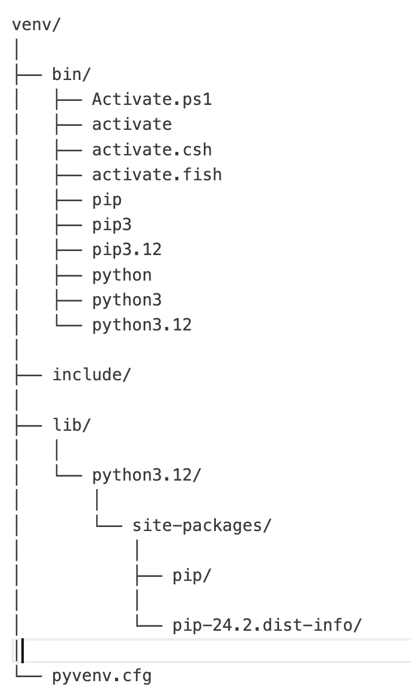
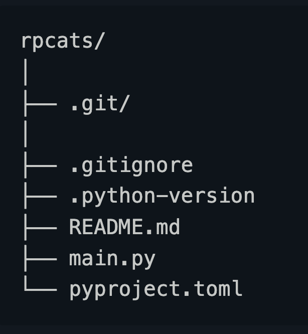

First, some vocab:
- Python dependency: an external package that a script (or other package requires to run)
- Executable: a script that can be read and run by your computer without additional compiling
- Interpreter: an executable file that takes a .py script and actually runs it
- symlinks: pointers that lead to a file
- PATH executable: the directory in which a computer can search for executables when the full path name isn’t given
Why not just install packages globally?
- Dependency conflicts! Different projects need different versions of packages (and each package may need a specific version of its dependencies)
Enter Virtual Environments…
Essentially, a subfolder specific to a single Python version containing all of the executables and packages needed for your project.
Two types we’ll cover today:
Python’s built-in environment manager: venv
uv, modern package installer built in Rust
Pros of Venv
Built-in (no additional install)
Easy to use and conceptualize
Venv is used largely for dependency isolation.
What happens when you use venv?
Activating a venv changes where your computer assumes your files are! Here’s what changes:
- sys.prefix and sys.exec_prefix:
- sys.prefix: path to platform-independent (OS-independent) Python packages
- sys.exec_prefix: path to platform-dependent (OS-ndependent) Python packages
What happens when you use venv (cont.)
- PYTHONPATH:
- tells Python where to look for modules (i.e., to go to venv sites-packaes NOT the base sites-packages)
- PATH variable changes
- modifies the PATH variable to include the virtual environment Python executable
In short: Python is told to STOP looking for exectuables, modules, and 3rd-party packages in the directory where base Python is installed. Instead, Python looks for files inside the virtual environment
What does a “venv” include?

A typical virtual environment file setup
/bin: stores the python interpreter, pip, and activation symlinks
lib/sites-packages: directory where 3rd party packages are installed
/include directory where C headers for packages are stored
Configuration file: all details needed to configure the venv
What about uv?
- faster package installation than venv/pip install
- more robust dependency handling
- project initialization (will initialize a root directory, git repo, .gitignore, etc.)
What does uv include?

A uv project file setup for a project called “rpcats”
Here the .toml file is a configuration file!
In conclusion…
- always use some kind of virtual environment / project isolation method
- use venv for “simple and dirty”
- use uv for more complex projects that involve publishing or development
Sources
- https://ashutosh-batra.medium.com/understanding-python-virtual-environments-venv-vs-uv-9d9811f2c073
- https://snarky.ca/how-virtual-environments-work/
- https://janelbrandon.medium.com/understanding-the-path-variable-6eae0936e976
- https://medium.com/@dakota.lillie/an-introduction-to-virtual-environments-in-python-ce16cda92853
- https://www.w3schools.com/python/ref_module_sys.asp
- https://realpython.com/python-uv/#installing-uv-to-manage-python-projects
- https://realpython.com/python-virtual-environments-a-primer/#a-folder-structure